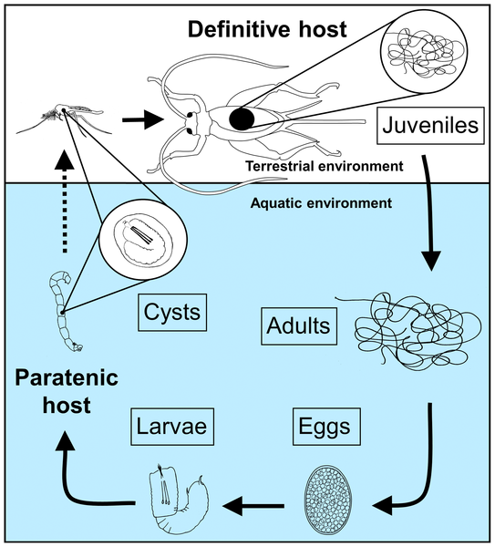

Nematomorfos
Ejemplar de la clase Gordioida, vulgarmente conocidos como "crin" o "pelo de caballo".
Los nematomorfos son un grupo de parásitos vermiformes con aspecto pelo largo y fino. Los adultos pueden medir de 10 a 70 cm, pudiendo llegar hasta varios metros.
El Phylum incluye dos clases: Nectonematoida y Gordioida, parásitos de crustáceos marinos, y de artrópodos terrestres, respectivamente. No obstante, su clasificación aún resulta difícil.
Ciclo de vida y desarrollo
Los nematomorfos pasan por tres estados: un estado larval (con una larva equinoderiforme, libre o enquistada), un juvenil parásito y un adulto libre.
Tanto la larva como el adulto son de vida libre y no se alimentan ni transforman, mientras que en la etapa parásita presentan mucha actividad metabólica por el desarrollo de los órganos, especialmente el sistema reproductor.
Generalmente, los nematomorfos parasitan artrópodos terrestres y, en menor medida, crustáceos y vertebrados, como peces o anfibios.
Esquema del ciclo de vida de un individuo de la Clase Gordioida.
Clasificación filogenética
El Phylum Nematomorpha se puede clasificar en dos grupos: clase Nectonematoida y clase Gordioida.
Clase Nectonematoida
Son organismos marinos y planctónicos (vida libre), con dos filas de setas laterales natatorias. Poseen una amplia cavidad corporal, dos cordones nerviosos, uno dorsal y otro ventral.
El género Nectonema, con cinco especies conocidas, es el único género conocido de este órden.
Ejemplar de Nectonema agile dentro de su hospedador, un crustáceo.
Ejemplar de Nectonema agile fuera del hospedador.
Clase Gordioida
Son organismos de aguas continentales o semi-terrestres. Sin setas laterales. Poseen un único cordón nervioso ventral, blastocele invadido por células mesenquimáticas.
Géneros representativos: Gordius, Chordodes, Paragordius.
Ejemplar de Gordius sp., comunmente denominado "pelo de caballo".
Un parásito del género Gordius liberandose de su hospedador, un artrópodo (grillo).
Ejemplares de Chordodes sp. junto a sus hospedadores.
Ejemplar de Paragordius sp. fuera de su hospedador.